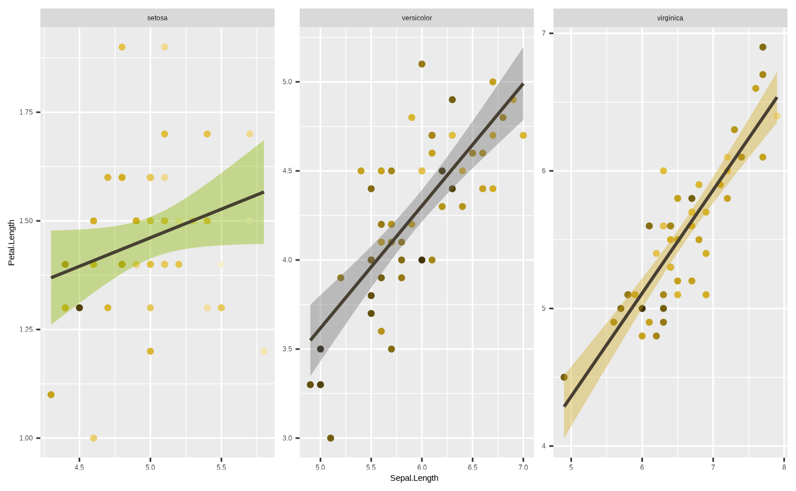

This article includes a brief explanation on how to use
ggplot2, and how to integrate the seizer
functions with it. This is far from an in-depth article, but it should
be enough for you to be able to generate some basic plots using
ggplot2. See the Further
reading section if you want to dive deeper into the world of
ggplot2.
We’ll begin, always, by loading our packages:
The grammar of graphics
The key to using ggplot2 is understanding its syntax,
which is based on Hadley Wickham’s layered grammar of graphics
framework. If you want to read more about it, there are links in the Further reading section. For our purposes
though, we’ll just focus on the components that make up a
ggplot object, and how we set it up. Here is a
representation of the structure of a ggplot object (adapted
from the ggplot2 documentation):
As you can see, the key word in the layered grammar of graphics
behind ggplot2 is layered. Each component is
passed separately to a function, and you add them to one another to
create a complete plot. We will explain how by recreating the following
figure stage by stage:

1. Data
The basis of any plot is the data underlying it. Our data will
consist of a dataframe, of which we will want to visualise at least one
dimension, or column. For example, we can view the iris
dataset which comes together with ggplot2 and has data of
sepal and petal dimensions for different species of iris flowers.
head(iris)
#> Sepal.Length Sepal.Width Petal.Length Petal.Width Species
#> 1 5.1 3.5 1.4 0.2 setosa
#> 2 4.9 3.0 1.4 0.2 setosa
#> 3 4.7 3.2 1.3 0.2 setosa
#> 4 4.6 3.1 1.5 0.2 setosa
#> 5 5.0 3.6 1.4 0.2 setosa
#> 6 5.4 3.9 1.7 0.4 setosaIrises, by the way, are awesome and you should take this opportunity to google some photos of irises. I’m a particular fan of Iris petrana.
Anyway, moving on!
We can generate a ggplot object by passing data to the
ggplot2::ggplot() function. This can be done either by
using the data argument in the ggplot
function:
p <- ggplot(data = iris)
p
or by piping, if you’re comfortable using that functionality:

Note that in both cases, we end up with an empty plot. This is
because while we have provided ggplot2 with the data, we
have not provided any other information on how to actually represent the
data in our plot. But we have created a ggplot object,
which we can now add more and more to using other functions.
2. Mapping
The next step is to decide which dimension, or dimensions, we want to
plot. In other words, we define the axes of our plot, and whether any
dimensions are encoded to size, shape, colour, etc. This is done using
the ggplot2::aes() function, which defines a list of
aesthetic mappings, and is passed on to the ggplot object
using the mapping argument. This is how we translate the
data to the graphics system, by “mapping” a column (i.e., dimension of
data) onto a graphical element (aesthetic). So, for example, if we want
to plot petal length against sepal length, we pass these as our axes to
the ggplot object:
Our plot is coming along - we now have axes, and we see that the ranges on the axes correspond to the range of values in each column in the dataframe. But the plot is still empty.
3. Layers
Layers display the mapped data from the previous step in some kind of
graphical representation. To quote from the ggplot
documentation:
Every layer consists of three important parts:
- The geometry that determines how data are displayed, such as points, lines, or rectangles.
- The statistical transformation that may compute new variables from the data and affect what of the data is displayed.
- The position adjustment that primarily determines where a piece of data is being displayed.
Layers are constructed using either geom_*() or
stat_*() functions. We will focus here on geoms, which are
the geometric objects with which we want the data visualised. These can
be points, bars, lines, boxes, etc. There are many different geoms to
choose from - but some will not work with our data. For example, this
works fine:
p + geom_point()
but this throws up an error:
p + geom_bar()
#> Error in `geom_bar()`:
#> ! Problem while computing stat.
#> ℹ Error occurred in the 1st layer.
#> Caused by error in `setup_params()`:
#> ! `stat_count()` must only have an x or y aesthetic.You’ll notice the error mentions something called
ggplot2::stat_count(). This is the statistical
transformation - which determines whether or not we want to show some
kind of statistical measure of our underlying data, for example a count.
But it could also be the mean, spread, confidence intervals, etc. All
geoms have underlying default stat values, which define the
statistical transformation to use on the data in this layer. But some
combinations just don’t make sense. So, our first attempt worked because
ggplot2::geom_point() by default uses
stat = "identity" - which means the data are not
transformed, and each datum is shown as a point with an x and a y
coordinate. But, ggplot2::geom_bar() by default uses
stat = "count", which doesn’t work with two dimensions.
This is a statistical transformation that counts the number of unique
values in a column, so it really only works when you have a single
dimension, for example in a barplot representing a histogram:

However, some geoms with stat transformations other than
identity can work very neatly with two dimensions. For
example, if we want to add a trend line to our scatterplot, we can use
ggplot2::geom_smooth(), which shows the central tendency
and confidence intervals of the y variable along the range of the x
axis. Sounds complicated, but really - it’s just the output of a model
where y is predicted by x:
p <- p + geom_point()
p + geom_smooth()
#> `geom_smooth()` using method = 'loess' and formula = 'y ~ x'
By default, ggplot2::geom_smooth() fits a non-linear
model (either loess or gam depending on the
sample size of the data), but we can constrain it to show a linear
regression - which means we have now created a scatterplot with a trend
line from a linear model of the form y ~ x. We could
construct this model by running
lm(Petal.Length ~ Sepal.Length, data = iris):
p <- p + geom_smooth(method = "lm")
p
#> `geom_smooth()` using formula = 'y ~ x'
An important thing to note here - each geom_*() function
defines a new layer. This means we can potentially use
different aesthetic mappings, or even different data, for a new geom. To
explore what that means, we’ll start by assigning an aesthetic mapping
to colour:
p <- ggplot(iris, aes(x = Sepal.Length, y = Petal.Length, colour = Species)) + geom_point() + geom_smooth(method = "lm")
p
#> `geom_smooth()` using formula = 'y ~ x'
We’ve now mapped the colour aesthetic onto the column Species, so
that each unique value of Species gets its own colour. This applies to
all geoms, because we passed the colour aesthetic to the
ggplot2::ggplot() function. Hence, we get three different
regression lines, because by mapping colour to a discrete variable, we
have also implicitly passed a grouping variable - i.e., the
statistical transformation underlying
ggplot2::geom_smooth() is applied separately to each
group.
However, we could also map the aesthetic variable to a single layer,
by passing it to only one geom_*() and not the other:
ggplot(iris, aes(x = Sepal.Length, y = Petal.Length)) + geom_point(aes(colour = Species)) + geom_smooth(method = "lm")
#> `geom_smooth()` using formula = 'y ~ x'
One important thing to note here is that unlike in the previous plot,
the regression line is shared. This is because the colour aesthetic
mapping is not passed to ggplot2::geom_smooth(), and so it
doesn’t include a grouping variable in the statistical transformation.
You can pass it separately to ggplot2::geom_smooth() using
the group aesthetic mapping, so that you still get separate
regression lines but without individual colours:
ggplot(iris, aes(x = Sepal.Length, y = Petal.Length)) + geom_point(aes(colour = Species)) + geom_smooth(aes(group = Species), method = "lm")
#> `geom_smooth()` using formula = 'y ~ x'
This is just an example of the strength of the layered structure of
ggplot2. By changing the aesthetic mappings and even data
arguments of different layers, you can plot your data in many
interesting ways.
For more expert ggplot2 users, you can use
geom_*() in unconventional ways for more complex data vis
by changing the stat value, or by passing a
stat_*() function and adjusting its geom
argument. This is beyond the scope of this tutorial, but feel free to
experiment if you’re interested.
Finally, there is the matter of the position. Just as with
statistical transformations, each geom_*() function comes
with its own default position argument. We won’t get into
it here, but know that this can be a very useful tool for some
visualisations by nudging components to the sides or overlapping them -
and this can be especially important for plots like boxplots or
barplots.
At this point, we have everything we need to create a simple plot. But there’s a lot more we can do by adjusting the next four layers in our grammar of graphics cake.
4. Scales
The Scales component refers to scaling values in the plot, or using
specific scales to represent multiple values or a range. One basic usage
is to make changes to our axes. Scale functions are patterned as
scale_{aesthetic}_{type}(), where {aesthetic}
is one of the pairings made in the mapping part of a plot. So if we want
restrict the range of values by setting new limits on the axis:
p + scale_y_continuous(limits = c(4, 7))
#> `geom_smooth()` using formula = 'y ~ x'
#> Warning: Removed 61 rows containing non-finite outside the scale range
#> (`stat_smooth()`).
#> Warning: Removed 61 rows containing missing values or values outside the scale range
#> (`geom_point()`).
Important: note the warnings! Data have been removed, which changes the statistical transformation and also drops an entire species from the plot! We’ll get into what this means when we get to discussing coordinate systems.
We could also use the scale_*() function to transform
the axis. For example, if we want to log an axis:
p + scale_y_continuous(transform = "log")
#> `geom_smooth()` using formula = 'y ~ x'
Another good use - we can rename a dimension using the
scale_*() function. Like this:
p + scale_x_continuous(name = "New name")
#> `geom_smooth()` using formula = 'y ~ x'
Note the distinction between discrete and continuous types, the third
element in scale_{aesthetic}_{type}(). If a discrete
variable is mapped to one your axes you can only transform it using
scale_{aesthetic}_discrete(). Attempting to use
scale_{aesthetic}_continuous() like in the previous example
will generate an error:
ggplot(iris, aes(x = Species, y = Petal.Length)) + geom_point() + scale_x_continuous()
#> Error in `scale_x_continuous()`:
#> ! Discrete values supplied to continuous scale.
#> ℹ Example values: setosa, setosa, setosa, setosa, and setosaFinally, we can use scale_*() functions to assign new
representations to aesthetic mappings other than the axes. For instance,
we can use scale_*() functions to change the size, shape or
colour values used to represent specific values of the underlying data.
For a colour scale, that means we can assign different colours to the
mapped groups:
p + scale_colour_manual(values = c("red","blue","purple"))
#> `geom_smooth()` using formula = 'y ~ x'
Or, we can use our Cesar Australia colour palettes by using one of the custom functions included with seizer:
p + scale_colour_cesar_d()
#> `geom_smooth()` using formula = 'y ~ x'
Note we use scale_colour_cesar_d() for a discrete colour
palette, because colour is mapped to a character variable. If we map
colour to a continuous variable, such as sepal width, we need to use the
appropriate function, scale_colour_cesar_c().
p <- ggplot(iris, aes(x = Sepal.Length, y = Petal.Length, colour = Sepal.Width)) + geom_point() + geom_smooth(method = "lm")
p + scale_colour_cesar_c(palette = "galliano_c")
#> `geom_smooth()` using formula = 'y ~ x'
#> Warning: The following aesthetics were dropped during statistical transformation:
#> colour.
#> ℹ This can happen when ggplot fails to infer the correct grouping structure in
#> the data.
#> ℹ Did you forget to specify a `group` aesthetic or to convert a numerical
#> variable into a factor?
Mind the warning that popped up - this refers to the
colour aesthetic being dropped from
ggplot2::geom_smooth() because it is meaningless to assign
a continuous colour mapping to this geom.
One important thing to note - you cannot include more than one colour
scale*. However, there is another aesthetic mapping which assigns
colours - fill. The difference between them is that colour
refers to outlines, and fill to, well, fills. Some geoms do
not have fill values - for example lines, or points, which
are all one dimnensional. But some do - for example, polygons like the
confidence intervals around our ggplot2::geom_smooth(). So,
we can assign Species to fill to have colour-coded species
while also assigning colours to different values of our third variable,
sepal width.
* unless you use the ggnewscale package
p <- ggplot(iris, aes(x = Sepal.Length, y = Petal.Length, colour = Sepal.Width, fill = Species)) + geom_point() + geom_smooth(method = "lm")
p + scale_colour_cesar_c(palette = "galliano_c") + scale_fill_cesar_d()
#> `geom_smooth()` using formula = 'y ~ x'
#> Warning: The following aesthetics were dropped during statistical transformation:
#> colour.
#> ℹ This can happen when ggplot fails to infer the correct grouping structure in
#> the data.
#> ℹ Did you forget to specify a `group` aesthetic or to convert a numerical
#> variable into a factor?
To truly see the difference between colour and
fill it is best to look at a geom that has
both. Compare this:
ggplot(iris, aes(x = Species, y = Petal.Length, colour = Species)) + geom_boxplot() 
To this:
ggplot(iris, aes(x = Species, y = Petal.Length, fill = Species)) + geom_boxplot() 
One final note about colour - we can also assign colours to geoms
without mapping them to variables. For example, if we just want to
change the colour of the lines so they’re not blue, we can do this by
assigning a value to the colour argument of
ggplot2::geom_smooth() outside of the
ggplot2::aes() function (in this example we use
ancient_lavastone, which is a colour included with the
seizer package):
p <- ggplot(iris, aes(x = Sepal.Length, y = Petal.Length, colour = Sepal.Width, fill = Species)) + geom_point() + geom_smooth(colour = ancient_lavastone, method = "lm") + scale_colour_cesar_c(palette = "galliano_c") + scale_fill_cesar_d()
p
#> `geom_smooth()` using formula = 'y ~ x'
5. Facets
Ok, we’re starting to get close to the final product. We will now
discuss facets, which are a way of dividing our plot to subplots by
using subsets of the data, defined by variables of a given column.
ggplot2::facet_*() functions can accept a mapping of
variables as a formula of the form y ~ x where
y represents the variable coded to rows (each value is
displayed in a separate row), and x the variable coded to
columns (each value is displayed in a separate column). We can omit
either y or x if we just want subplots across
columns or rows, respectively. For example, if we want to divide our
plot into a subplot for each species next to one another (separate
columns):
p + facet_wrap(~ Species)
#> `geom_smooth()` using formula = 'y ~ x'
Note that all three facets have shared ranges on their axes. This can
sometimes be useful, if you want to easily compare one group to another.
In other cases, it may be informative - for instance, if the range of
values in one group is so large that the variation in another is masked
by it. We can sort of see something like that happen with the species
setosa, where most of the subplot is empty space. We can get
around this using the scales argument in the
facet_*() function. We can free up one or both of the axes
by passing scales = "free_x",
scales = "free_y" or scales = "free", which
essentially changes the scale parameters of individual facets based on
the data range for the group in the data subset:
p <- p + facet_wrap(~ Species, scales = "free")
p
#> `geom_smooth()` using formula = 'y ~ x'
6. Coordinates
The final component is the coordinate system. These define how your
position aesthetics (x and y) are interpreted and displayed. You
basically have two options* here - Cartesian (the default), and polar.
Basically, Cartesian coordinate system is where your x and y axes are
perpendicular. In a polar system, each point is defined by a radial
coordinate (distance from the centre) and an angular coordinate (or
azimuth). Sometimes data vis will require polar coordinates
(e.g., pie chart), but you will likely never have to worry
about it. But if you want to see what happens when you use a polar
coordinate system in ggplot2:
* unless you’re creating maps, in which case coord_sf gets into the picture
p + coord_polar()
#> `geom_smooth()` using formula = 'y ~ x'Looks cool eh? Pretty nonsensical from a data vis perspective, but we can see what happened here - Petal.Length has become the axis along the radius (radial coordinate) and Sepal.Length has become the azimuth (angular coordinate).
Anyway, the main use you will get from playing with coordinates is if you want to zoom in on particular parts of the data. Remember when we changed the limits in our axis scale? Here it is again:
ggplot(iris, aes(x = Sepal.Length, y = Petal.Length, colour = Species)) + geom_point() + geom_smooth(method = "lm") + scale_y_continuous(limits = c(4, 7))
#> `geom_smooth()` using formula = 'y ~ x'
#> Warning: Removed 61 rows containing non-finite outside the scale range
#> (`stat_smooth()`).
#> Warning: Removed 61 rows containing missing values or values outside the scale range
#> (`geom_point()`).
Here’s what happens if you do something similar using the function
ggplot2::coord_cartesian():
ggplot(iris, aes(x = Sepal.Length, y = Petal.Length, colour = Species)) + geom_point() + geom_smooth(method = "lm") + coord_cartesian(ylim = c(4, 7))
#> `geom_smooth()` using formula = 'y ~ x'
See the difference in the green line? This goes back to those
warnings we mentioned when changing the range of the axis using a
scale_*() function. scale is a transformation.
You’re telling ggplot2 to only consider data within the
range defined by the scale_*() function - so the regression
function underlying ggplot2::geom_smooth() only uses data
within that range to calculate the trend line. Coordinates, however,
only change how the data are displayed, not how anything is calculated.
So this gives us a real zoom in, without actually changing any of the
data underlying the plot.
7. Theme
This is another important way to play around with
ggplot2 objects. ggplot2::theme() controls all
of the static elements of a plot - basically anything to do with how it
looks that isn’t controlled by the underlying data. This can be things
like font size of labels, width of grid lines, background colour, etc.
For example, if you want to get rid of a legend it’s as simple as
running:
p + theme(legend.position = "none")
#> `geom_smooth()` using formula = 'y ~ x'
This is actually an important component of data vis, since this can
have a large impact on how visually appealing and neat your plot looks.
Otherwise good data vis can fail if the plot comes out looking too
cluttered, and the static elements can have a lot to do with this. From
a company or team perspective, this can also be where you standardise
your plots to a distinct visual style that reinforces your brand
identity. Unfortunately, while powerful and important,
ggplot2::theme() is also very complicated. There are
a lot of parts you can customise. So, to save you the
trouble, seizer comes with its own, inbuilt
theme_cesar() function which makes your figure look nice
and tidy and in line with the Cesar Australia style guide!
p <- p + theme_cesar()
p
#> `geom_smooth()` using formula = 'y ~ x'We’ve almost recreated our figure. The one thing we’re missing is
labels - and while you can change those using scale_*() or
ggplot2::theme() functions, you can also use the handy
ggplot2::labs() function. Note that you can use this to add
titles and susbtitles, but also to change the names of existing axes
and/or aesthetic mappings.
p <- p + labs(title = "This is a title", subtitle = "This is a subtitle")
p
#> `geom_smooth()` using formula = 'y ~ x'So there we go! We have now successfully recreated the figure, using all of our distinct stages, apart from Coordinates which we leave at default values:
ggplot(iris, # 1. Data
aes(x = Sepal.Length, y = Petal.Length, colour = Sepal.Width, fill = Species)) + # 2. Mapping
geom_point() + geom_smooth(colour = ancient_lavastone, method = "lm") + # 3. Layers
scale_colour_cesar_c(palette = "galliano_c") + scale_fill_cesar_d() + # 4. Scales
facet_wrap(~ Species, scales = "free") + # 5. Facets
theme_cesar() + # 7. Theme
labs(title = "This is a title", subtitle = "This is a subtitle")